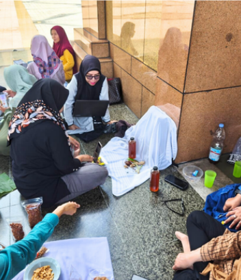
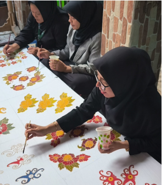

PROGRAM UTAMA

Self Healing Perempuan Kepala Keluarga

Pelatihan Rencana Bisnis

Pelatihan UMKM Kepala Keluarga (Poto Produk)

Peningkatan Kapasitas UMKM Perempuan di Sebulu
Peningkatan Kapasitas PEKKA — Self Healing dan Purpose Of Life
Pelatihan dan Pendampingan Program Pemberdayaan Santripreneurs bersama Baitulmal Munzalan Indonesia
Program Gerakan Sosial dan Lingkungan
Pendampingan pada salah satu anggota PEKKA yang mengalami dampak isolasi sosial, sehingga sang ibu mengalami stres dan depresi, dan jatuh sakit. Anak tidak terperhatikan dan di dalam rumah penuh dengan sampah, di daerah Lempake.
Program Gerakan Sosial dan Lingkungan
Pendampingan siswa yang diusir oleh gurunya karena tidak punya HP, buku, dan tidak bisa membayar biaya sekolah.